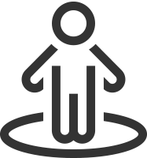
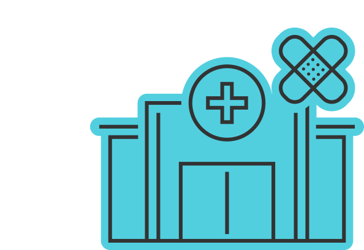
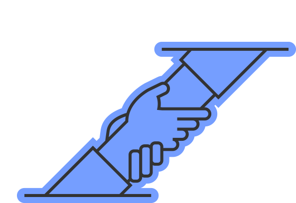
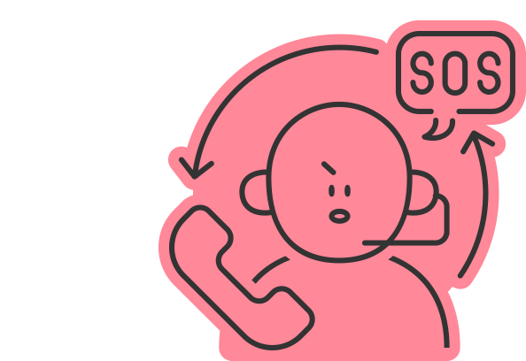
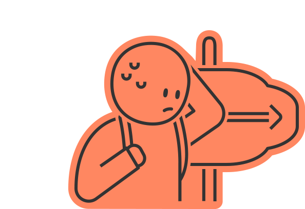
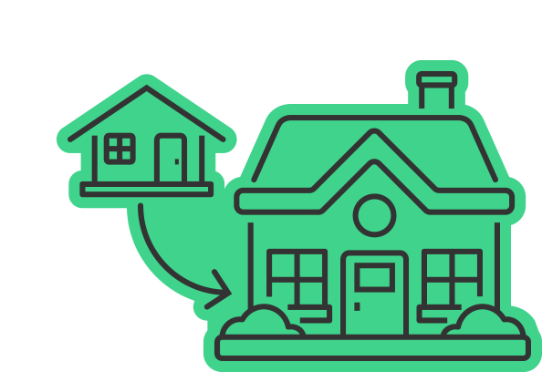
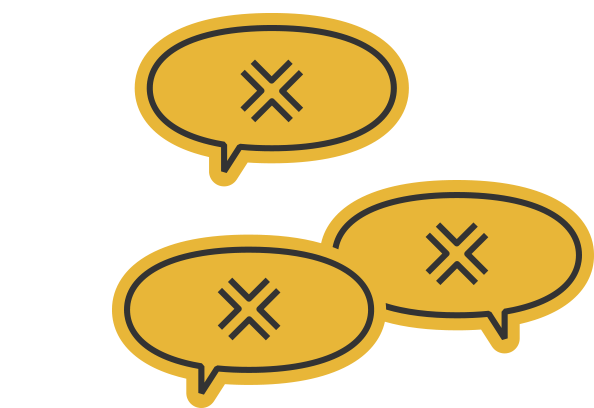

서울특별시교육청 학교 성폭력 온라인 신고센터
상황 인식하기
도움받을 곳 찾기
해결 방법 선택하기
신고하고 처리하기
다시 일상으로
상황 인식하기
나의 상태 알기
사건 정리하기
법 규정 찾아보기
나의 상태 점검 결과
그럴 땐 이렇게 해요

몸의 상태
몸에 상처가 난 경우
근처 병원에서
치료를 받아요

• 병원에 ‘성폭력 피해로 왔다’고 말하고 진단서를 발급받으면 증거로 사용할 수 있어요.
• 강간(성기 삽입) 피해를 입은 경우 반드시 산부인과 진료를 받아요. (성병, 임신 위험) : 최대한 빠른 시간 내(48시간 이내 권장) 몸을 씻지 않고 병원 방문
나중을 대비해
증거를 수집해요
• 나의 몸에 가해자의 머리카락 등이 묻어있을 수 있어요.
• 피해 당시 입었던 옷을 코팅이 되지 않은 종이봉투에 담아 보관해요.
• 피해 장소는 되도록 그대로 두거나 사진을 찍어두어요. (가해자의 지문, 소지품 등 증거가 남아있을 수 있어요)
어디로 가야할지
모르겠다면
지원 기관에 연락해 가까운 병원을 안내받아요.
※ 24시간 긴급 상담: 여성긴급전화 (국번없이 1366)
마음의 상태
즉시 다른 사람에게
도움을 청해요

가까운 사람에게 나의 상태를 알리고 필요한 도움을 받아요.
도움 받을 수 있는
기관을 찾아요

성폭력 피해자 지원 기관이나 청소년 상담 기관에서 전문가의 도움을 받을 수 있어요.
※ 24시간 긴급 상담: 청소년 상담(국번없이 1388), 여성긴급전화(국번없이 1366)
생활의 상태
학교/회사에
가기 힘들다면

가해자와의 긴급분리 조치
나 피해자의
치료, 요양, 휴가
를 요청해요.
조사·처리 기간 동안 피·가해자 분리가 가능해요
피해자가 학생이라면
• 가해 교직원 : 성폭력 인지 즉시 담임 해제, 수업 배제
• 가해 학생 : 출석정지, 대안교실·상담실 등을 이용한 분리
피해자가 교직원이라면
• 피해자의 의사를 고려하여 행위자와의 업무･공간 분리, 휴가 등
치료를 받거나 치료를 위한 요양을 해요
• 성폭력으로 인한 신체·정신적 상처를 치료하기 의료기관에서 치료를 받거나 요양할 수 있어요.
• 치료나 요양은 학교폭력대책심의위원회(피해자가 학생인 경우)나 공무원 복무규정(피해자가 교직원인 경우)을 통해 출석·병가로 인정받을 수 있어요.
가해자와
함께 산다면

피해자를 위한
쉼터/그룹홈
등 별도 주거지에 입주해요.
그룹홈
(신청: 성폭력 상담소)
성폭력 피해자와 피해자의 가족은 그룹홈(임대주택)에 입주할 수 있어요. (입주기간 2년, 1회 연장 가능)
국민임대주택
친족성폭력피해자 또는 아동·청소년 성폭력피해자 중 성폭력피해자쉼터에 입소하였던 사람은 본인 또는 가족이 국민임대주택의 우선 입주권을 가져요.
긴급복지지원
(신청: 주소지관할 구청 또는 보건복지 콜센터 129)
성폭력 이후 6개월 이내 생계·의료·주거지원·사회복지시설 이용지원을 받을 수 있어요.
※신청 안내 : 여성긴급전화상담 1366, 해바라기센터
잘못된 소문이
돈다면

2차 피해
에 대해서도 조사와 조치를 할 수 있어요.
2차 피해란
성폭력 가해자나 주변인이 피해자·신고자에게 불이익을 주거나, 소문·따돌림 등으로 괴롭히는 것을 말합니다.
가해자가 협박하거나 소문을 내는 경우
가해자가 학생·교직원이라면 2차 가해로 추가 징계, 처분을 받을 수 있습니다.
협박 등 불법행위에 대해서는 수사기관에 신고하거나 민사소송을 제기할 수 있습니다.
가해자의 접근금지를 원하는 경우
가해자가 학생·교직원이라면 학교에 공간 분리, 수업 배제 등의 조치를 요구할 수 있습니다.
가해자의 위협이 염려되는 경우
수사기관·법원에 신변안전조치, 구속 신청을 할 수 있습니다.
*신변안전조치 : 피해자 쉼터 등 시설에서의 보호, 신변 경호, 집 주변 순찰 지원 등
다음